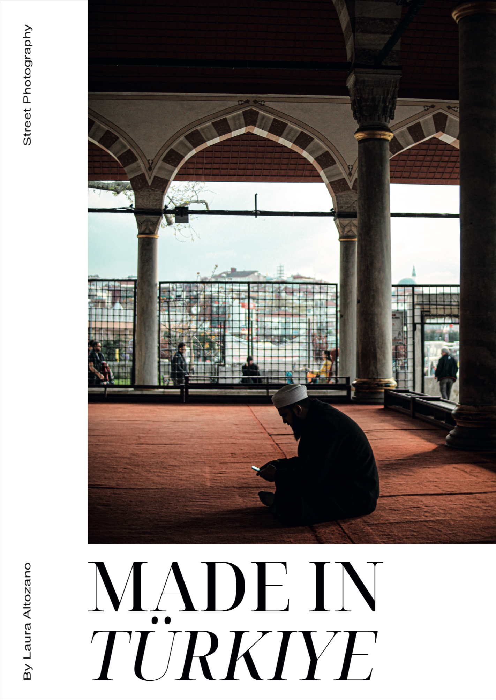

Made in Türkiye
EN
Made in Türkiye is an editorial and photographic project developed as a visual journey through Türkiye. The publication combines photography and editorial design to build a personal visual narrative through its pages.
ES
Made in Türkiye es un proyecto editorial y fotográfico desarrollado como un recorrido visual por Turquía. La publicación combina fotografía y diseño editorial para construir una narración visual personal a través de sus páginas.

Cover